Θα πιάσουμεν τα βουνά τζαι τα λαγκάδια!
Δη Μπέισικς
Καλώς ορίσατε κουμπάρες τζαι κουμπάροι μου! Τι χαμπάρια;
Εδώ θα βρίσκετε ό,τι πληροφορία χρειάζεστε για το επερχόμενο ταξίδι μας στην Κύπρο. Παρακαλείστε να μην μοιράζεστε το link σε αδιάκριτα μάτια OR ELSE.
Δη κόντεντς οφ δης ντόκιουμεντ αρ σάμπτζεκτ του τσέιντζ.
Δη Πήπολ
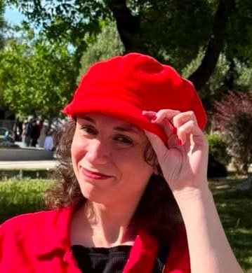
Μπαρόβια
(Κότσος)
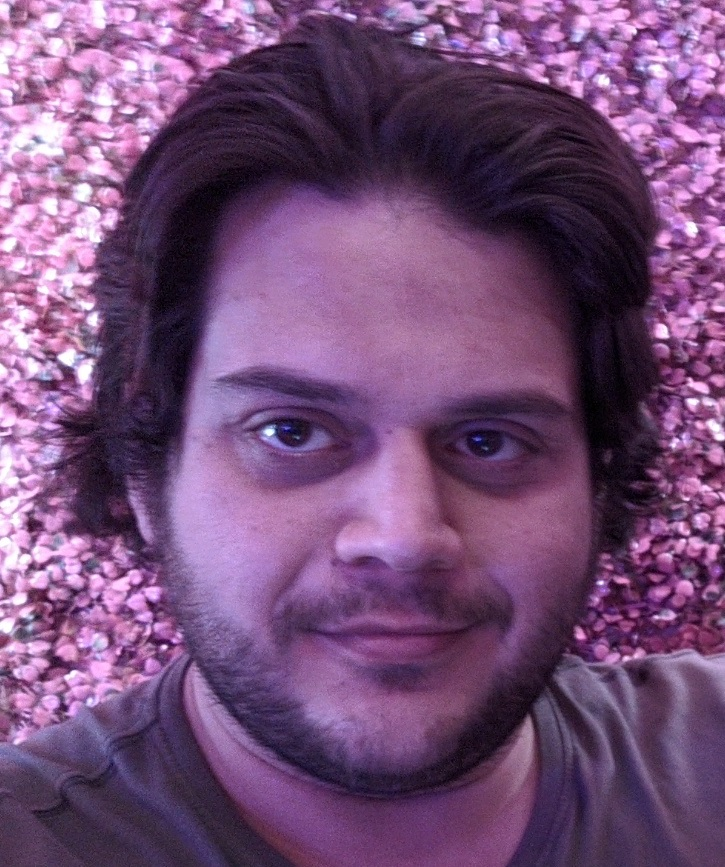
Monke
(Γρηγόρης)
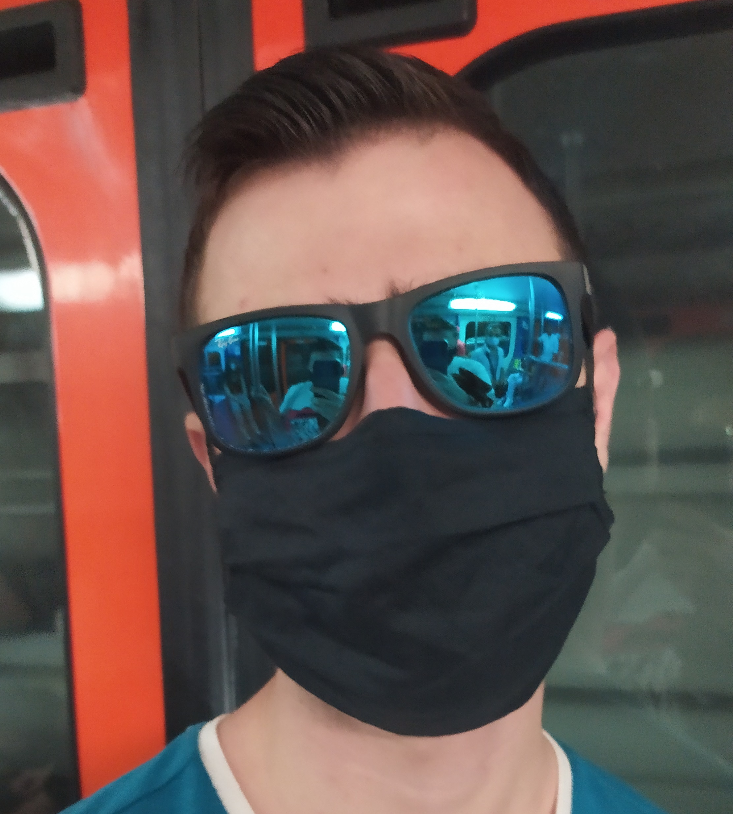
Terrorist
(Κωστής)
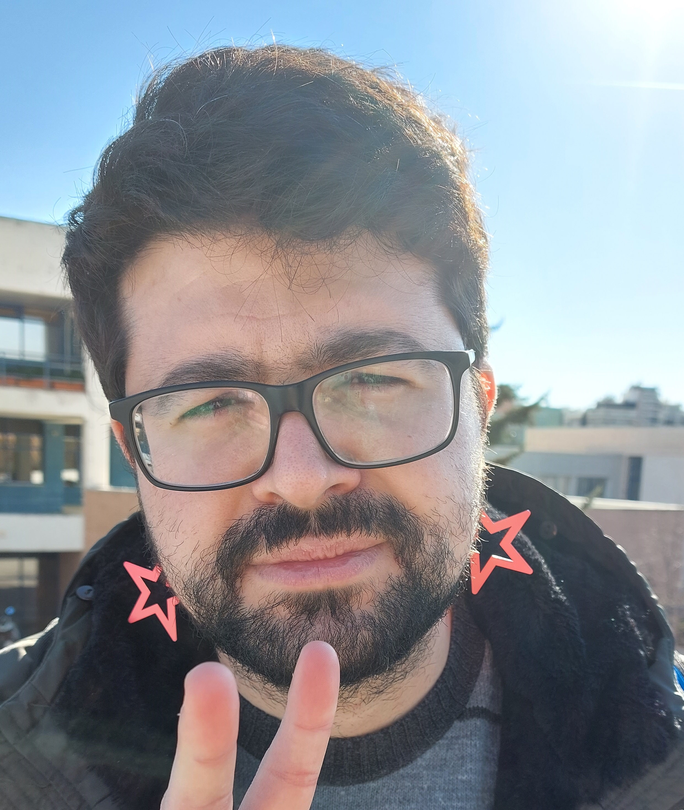
Gorilla Driver
(Μάριος)
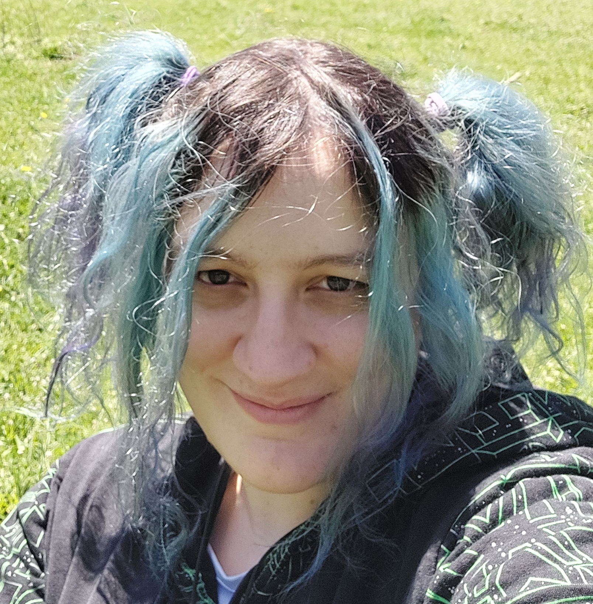
Θεά
(Ρηγίνα)
Δη Πλέις
Θα μένουμε στο χωριό Λύμπια, στο κατάλυμμα Olympia Traditional Houses.
Η τιμή είναι 120€/νύχτα. Η Παναγιώτα μας έχει πληρώσει τα 2 βράδια (Σάββατο - Δευτέρα), άρα μας μένουν άλλα 3 (Τετάρτη - Σάββατο). Αν υπολογίσουμε ένα βράδυ που η Κότσος δεν θα είναι, η τιμή διαμορφώνετται στα 78€/άτομο και 48€ για την Κωνσταντίνα.
Η τοποθεσία του καταλύματος είναι αυτή.
Δη Ντέιτς
Αρριβάρουμε στην Κύπρο και στο αεροδρόμιο της Λάρνακας την Τετάρτη 7/10/2026 στις 12:45. Η Κότσος αρριβάρει την επόμενη, Πέμπτη 8/10/2026 την ίδια ώρα στο ίδιο μέρος για να κάνει είσοδο. Φεύγουμε όλοι μαζί (πάλι από το ίδιο μέρος, big surprise!) την Δευτέρα 12/10/2026 στις 18:00.
Ο γάμος είναι την Κυριακή 11/10/2026 στις 16:30 κοντά στο μέρος που θα μένουμε.
Αυτό μας δίνει μισή μέρα χωρίς την Κότσο, μισή μέρα με την Κότσο όταν έρθει, 2 φουλ μέρες (Παρασκευή + Σάββατο), μισή μέρα πριν το γάμο και άλλη μισή πριν φύγουμε.
ΠΡΕΠΕΙ ΝΑ ΤΑ ΧΩΡΕΣΟΥΜΕ ΟΛΑ ΣΕ ΑΥΤΟ ΤΟ ΧΡΟΝΟ.
AND WE WILL.
(χάρη στην προγραμματάρα της Θεάς)
Δη Μαπ
Oι main πόλεις που έχουμε να πάμε είναι αυτές (κατεχόμενες not included). Αλλά έχει και άλλα, worry not!
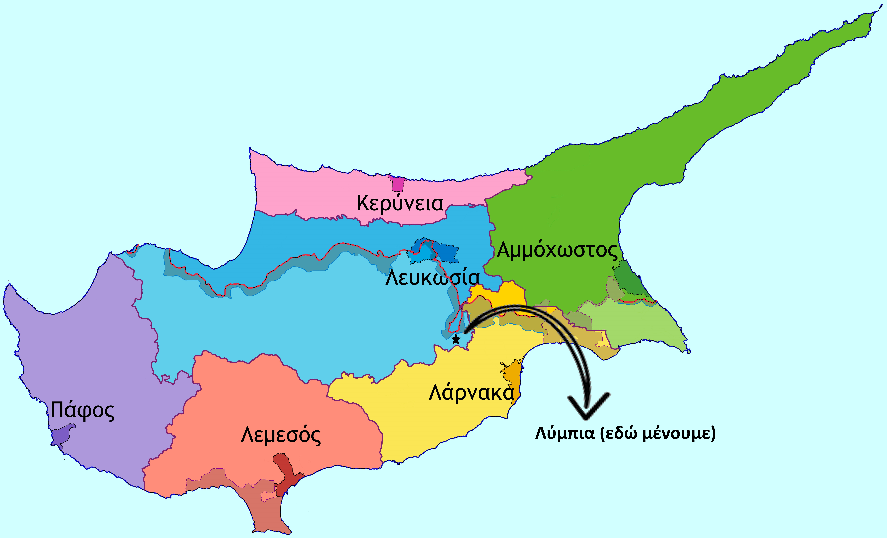
Δη Πρόγκραμ
Τζαι τώρα η στιγμή που ούλλοι επεριμένατε!
-
Μέρα 1 (Τετάρτη 7/10)
Φτάνουμε στη Λάρνακα 12:45, ας πούμε πως ως τη 13:30 θα έχουμε βρει το Μάριο (που δε θα αργήσει!) και θα έχουμε μπει στο αμάξι. Σήμερα βιαζόμαστε να προλάβουμε! Ξεκινάμε πηγαίνοντας στα Λύμπια (25λ). Αφήνουμε τα πράγματά μας στο ξενοδοχείο ΑΜΕΣΑ, παίρνουμε και κάτι (χορταστικό) στο χέρι να φάμε και ΠΡΟΣΩ ΟΛΟΤΑΧΩΣ ΓΙΑ ΤΑ ΒΟΥΝΑ! Ιδανικά 14:30 θα έχουμε ξενικήσει. Η διαδρομή θα έχει πολύ πράσινο λένε, αλλά Κύπρος είναι, αν δε το δω δε το πιστεύω.
Πρώτη στάση η Μονή της Παναγίας του Κύκκου (1ω45λ). Θα είναι περίπου 16:15. Μπορούμε να κάτσουμε καμια ώρα. Έχει έκθεση, θα δούμε την εκκλησία, θα δούμε και το Θρονί της Παναγίας που είναι 5 λεπτά με το αμάξι. Αυτό είναι τάφος του Μακαρίου Γ' (μαθήματα ιστορίας ο Μάριος). 17:15 την κάνουμε.
Δεύτερη στάση η Μονή Τροοδίτισσας (45λ). Θα είναι 18:00, και είναι σημαντικό να μην είναι πιο αργά γιατί 19:00 κλείνουνε. Είναι χτισμένη στο μεσαίωνα και έχει μια ασημοσκέπατη θαυματουργή (AHAHAHA!) εικόνα της Παναγίας. Όποτε θέλουμε μέχρι να κλείσουν φεύγουμε.
**Η Μονή Τροοδίτισας στο site της λέει πως κλείενει 18:00, σε αντίθεση με το maps που λέει 19:00 και με άλλη σελίδα που λέει 16:00. Πρέπει να πάρουμε τηλέφωνο να ρωτήσουμε (ΜΑΡΙΕ). Αν όντως κλείνει 18:00 πρέπει να κάτσουμε λιγότερο στην Μονή Κύκκου. Εννοείται πως ό,τι χρόνος έχουμε κερδίσει πιο πριν (από αεροδρόμιο, πράγματα κ.λ.π.) είναι υπέρ μας.**
Τελευταία στάση το χωριό Όμοδος (25λ). Είναι όμορφο παραδοσιακό χωριό. Κάνουμε βόλτα και τρώμε εκεί. Θα έχει πάει αργά, οπότε ελπίζουμε πως στα μοναστήρια θα μας έχουν κεράσει και τίποτα (και καλό είναι να έχουμε μαζί σνακς). Έχει και στον Όμοδο ένα μοναστήρι του Τιμίου Σταυρού (γύρω από αυτό χτίστηκε το χωριό), αλλά θα το δούμε μόνο απ'έξω γιατί κλείνει νωρίς. Φεύγουμε για ξενοδοχείο (1ω20λ) όποτε θέλουμε.

Click for Maps route link!
Backstage Info Το πρόγραμμα αυτό γίνεται τη συγκεκριμένη ημέρα γιατί συνήθως μουσεία/αρχαιολογικοί χώροι κλείνουν νωρίς, και θα έχουμε ήδη χάσει το πρωί λόγω πτήσης. Επίσης, νομίζω πως η Κότσος αυτό είναι πιο ΟΚ να το χάσει από τα άλλα.
-
Μέρα 2 (Πέμπτη 8/10)
Φοράμε μαγιό και ξεκινάμε χαλαρά για Λάρνακα (20λ). Η Κότσος φορά και αυτή μαγιό πριν μπει στο αεροπλάνο.
Είμαστε λίγο περιορισμένοι μέχρι να πάρουμε την Κότσο από το αεροδρόμιο. Μπορούμε να πάμε κάπου στη Λάρνακα να κάνουμε βόλτα, να φάμε πρωινό ή να αράξουμε. Ίσως να κάνουμε μπάνιο στην παραλία Φοινικούδες.
Παραλαμβάνουμε την Κότσο μέχρι 13:30. Παίρνουμε κάτι πρόχειρο στο χέρι να φάμε και ξεκινάμε για τα μέρη του Μάριου!
Πρώτη στάση το Παραλίμνι (40λ). Θα δουμε το σπίτι του Μάριου, θα μας πάει σε ένα σημείο (στο σχολείο του?) που φαίνονται τα κατεχόμενα, γενικά θα μας ξεναγήσει. Ως 15:30 πιστεύω θα έχουμε τελειώσει.
Συνεχίζουμε για μπάνιο στην παραλία του ΠΟΡταρά (15λ). Ε, πόσο θέλετε να μουλιάσετε? Κανα 2ωρο? Ας έχουμε φύγει ως 17:45.
Επόμενη στάση Αγία Νάπα (15λ), το κλαμπατσίμπαλο της Κύπρου! Όλα τα μπαρ και τα κλαμπ εκεί είναι. Εκεί θα κάνουμε βόλτα στα μαγαζάκια και στην παραλία, ίσως να πιούμε και κάτι. Όχι πολλά πολλά εκεί γιατί είναι πιασοκωλέ.
Τώρα έχουμε options. Μπορούμε να κάτσουμε Αγία Νάπα όσο θέλουμε και να γυρίσουμε (40λ). Αν το κανονίσουμε όμως, ίσως βολεύει να πάμε να φάμε στο Βαρέλι (είναι πολύ καλή παραδοσιακή ταβέρνα, πρέπει να κλείσουμε και τραπέζι). Ίσως είναι και η ευκαιρία να δούμε την Παναγιώτα αν μπορεί και εκείνη. Το Βαρέλι κλείνει στις 11, οπότε πρέπει να πάμε τουλάχιστον 8μιση-9. Είναι 40λ από την Αγία Νάπα και μετά θα θέλουμε 20-30 λεπτά από το Βαρέλι για το ξενοδοχείο.
Αν δε φάμε στο Βαρέλι τρώμε κάπου αλλού, αλλά καλύτερα όχι στο πιασοκωλέ. Ό,τι θέλετε.

Click for Maps route link!
Backstage Info Και αυτή τη μέρα πάμε σε μέρη που δεν έχει επισκέψεις σε χώρους που κλείνουν νωρίς γιατί το πρωί είναι πιασμένο.
-
Μέρα 3 (Παρασκευή 9/10)
ΞΕΚΙΝΑ ΤΟ ΞΥΛΟ. PERHAPS ΜΑΓΙΟ.
Σήμερα πάμε Λεμεσσό! Μαθαίνουμε τι σημαίνει gentrification!
Ξεκινάμε κατά τις 8μιση για τον πύργο των Ιπποτών στο Κολόσσι (50λ). Εκεί μάλλον μπορούμε με 17€ να βγάλουμε 3ήμερο εισιτήριο για σχεδόν όλα τα μουσεία και τους αρχαιολογικούς χώρους. Συμφέρει. Καθόμαστε καμία ώρα να τον δούμε (είναι 3όροφος). 10:30 φεύγουμε.
Σε 10 λεπτά είμαστε στον αρχαιολογικό χώρο του Κουρίου. Εκεί θέλουμε κανα 2ωρο γιατί έχει πολλά να δούμε και θέλουν περπατηματάκι. Θα δούμε το αρχαίο θέατρο, την Έπαυλη του Ευστολίου, μια παλαιοχριστιανική βασιλική, τη ρωμαϊκή αγορά, το νυμφαίο, την οικία των μονομάχων και την οικία του Αχιλλέα. 12:40 ας φύγουμε.
Σε 5 λεπτά θα είμαστε στο στάδιο του Κουρίου και σε άλλα 5 στο ιερό του Απόλλωνα. Αυτά θα πας πάρουν καμια ώρα μαζί. Ας πούμε πως στις 14:00 θα έχουμε τελειώσει.
Συνεχίζουμε στο Μεσαιωνικό κάστρο και μουσείο της Λεμεσσού (40λ). Εδώ θα φράσουμε κατά τις 14:40 και θέλουμε καμιά ώρα. Κλείνει 17:00, οπότε αν μπουμε ως τις 15:30 καλά είναι (αν πεινάμε πιο πριν). Ανάλογα το πώς θα έχει πάει το πρόγραμμα θα δούμε τι χρόνο έχουμε και αν θα φάμε πριν ή μετά. Είναι η παλιά πόλη εκεί, θα έχει φαγάδικα.
Σε 10 λεπτά με τα πόδια, περπατώντας μέσα από την παλιά πόλη, μπορούμε να είμαστε στο μόλο Λεμεσσού με τους ουρανιοξύστες. Από εκεί περπατώντας μπορούμε να πάμε μέχρι τη μαρίνα. Εκεί μποορύμε να κάνουμε βόλτα, να πιούμε καφέ, να χαζέψουμε, να φάμε. Αν θέλετε, πιο πριν (και όσο έχει φως) μπορούμε να πάμε για μπάνιο είτε στην τεχνητή παραλία της μαρίνας είτε στην παραλία Δασούδι 10 λεπτά με το αμάξι.
Σε καμιά ώρα μπορούμε να είμαστε στο ξενοδοχείο, οπότε επιστρέφουμε αναλόγως.

Click for Maps route link!
Backstage Info Υπάρχει περίπτωση να έχει κίνηση κοντά στη Λέμεσσό. Βάζω να ξεκινήσουμε νωρίς για να είμαστε safe.
-
Μέρα 4 (Σάββατο 10/10)
ΞΥΛΟ DAY 2. Φορέστε μαγιό και LET'S GO MADAFAKAS.
Μέρα Πάφου. Είναι μακριά, άρα ξεκινάμε στις 8:00.
Πρώτη στάση η Πέτρα του Ρωμιού (1ω15λ). Εκεί γεννήθηκε η Αφροδίτη (η μάλλον βγήκε από τη θάλασσα). Θα δούμε τη θέα. Έχει και παραλία, αν θέλετε το απόγευμα γυρίζοντας κάνουμε μπάνιο εδώ.
Συνεχίζουμε για Παλαίπαφο (Κούκλια) (10λ). Ιδανικά θα είναι 9:45. Πάμε στον αρχαιολογικό χώρο με το ιερό της Αφροδίτης και άλλα αρχαία και μεσαιωνικά κατάλοιπα. Ας φύγουμε κατά τις 10:30-10:45.
Μετά από κανα μισάωρο φτάνουμε Πάφο! Πάμε στον αρχαιολογικό χώρο της νέας Πάφου, την Κάτω Πάφο. Εκεί θέλουμε κανά γεμάτο 2ωρο. Θα δούμε τις οικίες του Διονύσου και του Ορφέα με τα ψηφιδωτά, το Ασκληπείο, το θέατρο, το ωδείο, τη βασιλική της Χρυσοπολίτισσας, το φρούριο των 40 κολόνων, το φάρο (αυτός είναι νέος), και τη θέα στο λιμανάκι με το κάστρο.
Θα έχει πάει 13:30. Μπορούμε για 1-1μιση ώρα να κάτσουμε για φαγητό κάπου, στο λιμανάκι ίσως. Ε, μέχρι τις 15:00 θα έχουμε φάει πιστεύω.
Συνεχίζουμε για τους τάφους των βασιλέων (5λ). Εκεί θέλουμε καμιά ωρίτσα. Κατά τις 16:15 φεύγουμε.
Αν αντέχουμε (φυσικά και θα αντέχουμε!) πάμε στο μοναστήρι Αγίου Νεοφύτου (20λ). Εκεί έχει την Εγκλείστρα, το σπήλαιο που ζούσε ο άγιος Νεόφυτος ο ερημήτης και του σκάλισε τοιχογραφίες. Έχει είοοδο 2€ που δεν περιλαμβάνεται στο 17ρι εισιτήριο γιατί γαμιούνται. Ε, καμιά ώρα θέλουμε εκεί. Μέχρι τις 18:00 (που έτσι και αλλιώς κλείνει) θα έχουμε φύγει.
Πάμε βόρεια για ένα μικρό photostopping. Σε ένα 25λεπτο θα είμαστε σε ένα καλό σημείο για να δούμε το ναυάγιο του πλοίου Edro III. Σε άλλα 5 λεπτά θα είμαστε σε άλλο σημείο, από το οποίο φαίνονται οι θαλάσσιες σπηλιές της Πέγιας.
Σε 10 λεπτά (θα είναι περίπου 18:45, ανάλογα και τι έχουμε κάνει ως τότε ίσως είναι και νωρίτερα) φτάνουμε για μπάνιο στον κόλπο των Κορραλιών. Αν δε μας αρέσει εκεί, μπορούμε να πάρουμε το δρόμο της επιστροφής και να κολυμπήσουμε στην Πέτρα του Ρωμιού που είχαμε δει το πρωί, αλλά αυτό θέλει άλλη μισή ώρα και ίσως είναι αργά και σκοτεινά (στις 19:00 ήδη έχει δύσει ο ήλιος, αλλά έχει αρκετό φυσικό φως). Αν skippάρουμε τη μονή Νεοφύτου θα είναι πιο εύκολη η Πέτρα του Ρωμιού για μπάνιο αλλά θα είστε αιρετικοί!
Μετά το μπάνιο επιστρέφουμε, τρώμε και κάπου είτε στη διαδρομή είτε στα Λύμπια.

Click for Maps route link!
Backstage Info Αυτή η μέρα μπορεί να γίνει τράμπα με τη μέρα της Λεμεσσού, αλλά καλύτερα να κάνουμε πρώτα Λεμεσσό που είναι πιο κοντά να δουμε και με την κίνηση τι παίζει.
-
Μέρα 5 (Κυριακή 11/10)
ΜΕΡΑ ΓΑΜΟΥ ΜΕΡΑ ΧΑΡΑΣ! ΜΕΡΑ ΞΥΛΟΥ.
Νταξ, όχι και τόσο. Αν αντέξατε Πάφο σήμερα είναι gg izi.
Σήμερα έχουμε το γάμο στις 16:30. Η εκκλησία ειίναι 15 λεπτά από το ξενοδοχείο. Για να προλάβουμε να ετοιμαστούμε ας βάλουμε στόχο 15:00 να είμαστε εκεί. Καλό είναι να μπανιαριστείτε από την προηγούμενη.
Σήμερα θα δούμε τη Λευκωσία που είναι και κοντά (κανά 40λεπτο αν έχει κίνηση).
Ξεκινάμε 9:00. 9:30-9:40 φτάνουμε στον τύμβο της Μακεδονίτισσας. Είναι στρατιωτικό νεκροταφείο με εντυπωσιακό μνημείο. Κατά τις 10:00 ας συνεχίσουμε.
Σε 10 λεπτά μπορούμε να είμαστε στο αρχαιολογικό μουσείο (Κυπριακό μουσείο). Ας κάτσουμε καμιά ώρα, 11:20 μπορούμε να φύγουμε. Πριν φύγουμε θα δούμε και τα Ενετικά τείχη δίπλα στο μουσείο.
Από εκεί μετά μπορούμε να παρκάρουμε στο parking D'Avila και περπατώντας να δούμε τη λαϊκή γειτονιά (παλιά πόλη), ίσως να περάσουμε και στα κατεχόμενα (ταυτότητα needed!) από την οδό Λήδρας (εκεί δε χαλάμε λεφτά όμως, κάνουμε μποϊκοτάζ!).
Συνεχίζουμε με 10λεπτο περπάτημα για την πλατεία Αρχιεπισκόπου Κυπριανού, που θα δούμε τα εντυπωσιακά κτίρια. Θα δούμε το παλάτι της αρχιεπισκοπής, το ναό του αγίου Ιωάννη και το άγαλμα του Μακαρίου.
Σε όλη αυτή τη βόλτα μπορούμε να κάτσουμε κάπου για σουβλάκι στα γρήγορα. 14:15 ας είμαστε στο αμάξι για να πάμε στο ξενοδοχείο.
Μετά γάμος, χαρά και γλέντι! Φαί, ποτό, μεθυσμένοι Κύπριοι!

Click for Maps route link!
Backstage Info Η μεγάλη μαλακία της ημέρας είναι πως τα φυλακισμένα μνήματα και ο ναός του αγίου Ιωάννη που έχει ωραίες τοιχογραφίες δεν είναι ανοιχτά Κυριακές. Ωστόσο δεν υπάρχει και άνεση να πάμε Λευκωσία άλλη μερα. Την επόμενη φεύγουμε από Λάρνακα και βολεύει να δούμε τη Λάρνακα, αν χώσουμε και Λευκωσία που είναι στην αντίθετη κατεύθυνση έχοντας και πράγματα στο αμάξι θα γαμηθεί το σύμπαν.
-
Μέρα 6 (Δευτέρα 12/10)
GOODBYE CYPRUS!
...Goodbye Marios.
Στις 18:00 φεύγουμε από αεροδρόμιο Λάρνακας, άρα είναι ευκαιρία ως τότε να δούμε τη Λάρνακα!
Ξεκινάμε κατά τις 9:30 από το δωμάτιο. Πρώτη στάση οι καμάρες του παλιού υδραγωγείου (20λ), μια σύντομη στάση για φωτογραφίες.
Προχωράμε για τον αρχαιολογικό χώρο του Κιτίου (10λ). Είναι 2,5€ είσοδος (καλύπτεται από το 17ρι αλλά είμαστε στην 4η μέρα και θα έχει λήξει). Δε θέλει πάρα πολλή ώρα, σε κανά μισάωρο το βλέπουμε.
Μέχρι τις 11:00 θα έχουμε παρκάρει στο δημοτικό χώρο στάθμευσης της Λάρνακας. Από εκεί θα δούμε το κάστρο της (είσοδος 2,5€, ίδια φάση με πριν) για κανα 20λεπτο, θα περπατήσουμε για την πλατεία και την εκκλησία του αγίου Λαζάρου (εκεί είναι που έθαψαν τον Λάζαρο τον φίλου του Χριστού όταν ξαναπέθανε, γι'αυτό λένε και την πόλη "Λάρνακα"), μετά βολτάρουμε στην οδό Ζήνωνος (έχει πολλά μαγαζιά) και μετά περπατάμε (και τρώμε) στις Φοινικούδες που έχει και εκεί ωραία μαγαζάκια. Όλα αυτά σαν περπάτημα είναι γύρω στο μισάωρο σύνολο. Νομίζω ως τις 14:00 μπορούμε να φύγουμε.
Σε 10 λεπτά με το αμάξι μπορούμε να βρεθούμε στην αλυκή και στο Τεκέ Χαλά Σουλτάν. Αυτό είναι τζαμί, οπότε για να μπούμε θα πρέπει να μη φοράμε πολύ κοντά σορτσάκια ή τιραντάκια και οι κοπελες να καλύψουμε τα μαλλιά (ας πάρουμε μαζί κανα μαντήλι ή φούτερ). Μέσα είναι ο τάφος της Ουμ Χαράμ (θείας του Μωάμεθ). Αλλά και μέσα να μη μπούμε, είναι όμορφο να το δούμε σα κτίριο με τους κήπους (και τις ΠΟΛΛΕΣ ΓΑΤΕΣ) του απ'έξω. Καθόμαστε κανα 45λεπτο.
Κατά τις 15:00 πάμε προς το Κίτι (15λ), όπου θα δούμε τον ναό και το πάρκο της Παναγίας Αγγελόκτιστης. Εκεί έχει ψηφιδωτό του 6ου αιώνα. Μπορούμε να είμαστε χαλαρά γιατί το αεροδρόμιο είναι δίπλα (10λ) και να φύγουμε κατά τις 16:20.
16:30 φτάνουμε αεροδρόμιο, νομίζω παραφτάνει ο χρόνος.
ΦΕΥΓΟΥΜΕ ΑΠΟ ΤΗΝ ΚΥΠΡΟ ΕΧΟΝΤΑΣ ΓΕΜΙΣΕΙ ΤΙΣ ΒΑΛΙΤΣΕΣ ΤΟΥ ΜΥΑΛΟΥ ΜΑΣ ΜΕ ΥΠΕΡΟΧΕΣ ΚΑΙ ΠΑΝΕΜΟΡΦΕΣ ΑΝΑΜΝΗΣΕΙΣ.
Στο επανιδείν κουμπάροι τζαι κουμπάρες μου!

Click for Maps route link!
Backstage Info Δε νομίζω να θέλετε μπάνιο τελευταία μέρα, αλλά αν θέλετε κάνουμε ένα σύντομο πριν φάμε στις Φοινικούδες. Απλά θα στενέψει λίγο το πρόγραμμα (ίσως skippaριστεί το Κιτίο).
Τιπς
- Το νερό ΔΕΝ ΠΙΝΕΤΑΙ. Θα αγοράζουμε μπουκάλια.
- Φέρτε άνετα παππούτσια για περπάτημα, αντηλιακό και να έχετε και σνακς μαζί γιατί κάποιες μέρες ίσως φάμε καλά αργά.
- Όλα μαζί τα εισιτήρια υπολόγισα πως είναι γύρω στα 25€.
- Έχω υπολογίσει τις διαδρομές λίγο στρογγυλοποιημένες προς τα πάνω σε διάρκεια και έχω δώσει αρκετό χρόνο (πιστεύω) σε κάποια πράγματα. Ωστόσο, αν κάπου μπορεί να εξοικονομηθεί χρόνος (π.χ. στο αεροδρόμιο) θα ήταν ιδανικό!
- Ο καλός και υπέροχος και φανταπληκτικός Μάριος θα ήταν πολύ καλό αν, πριν μας πάρει από το αεροδρόμιο την Τρίτη, έκανε check-in στα δωμάτια για να μη χάνουμε χρόνο ώστε κυριολεκτικά απλά να αφήσουμε τις βαλίτσες μας και να φύγουμε. Ωστόσο, έχει ήδη ΠΟΛΛΗ οδήγηση εκείνη τη μέρα, αν πει όχι θα τον καταλάβουμε και δεν θα τον αγαπάμε λιγότερο.
Δη Μάσα
-
Χαλούμι 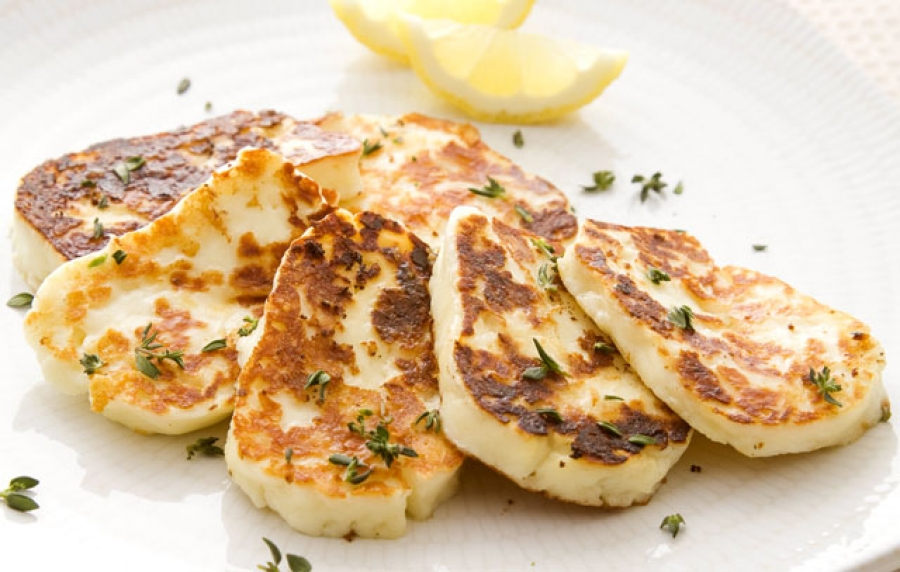
-
Χαλλούμωτή (τυρόπιτα με χαλούμι)
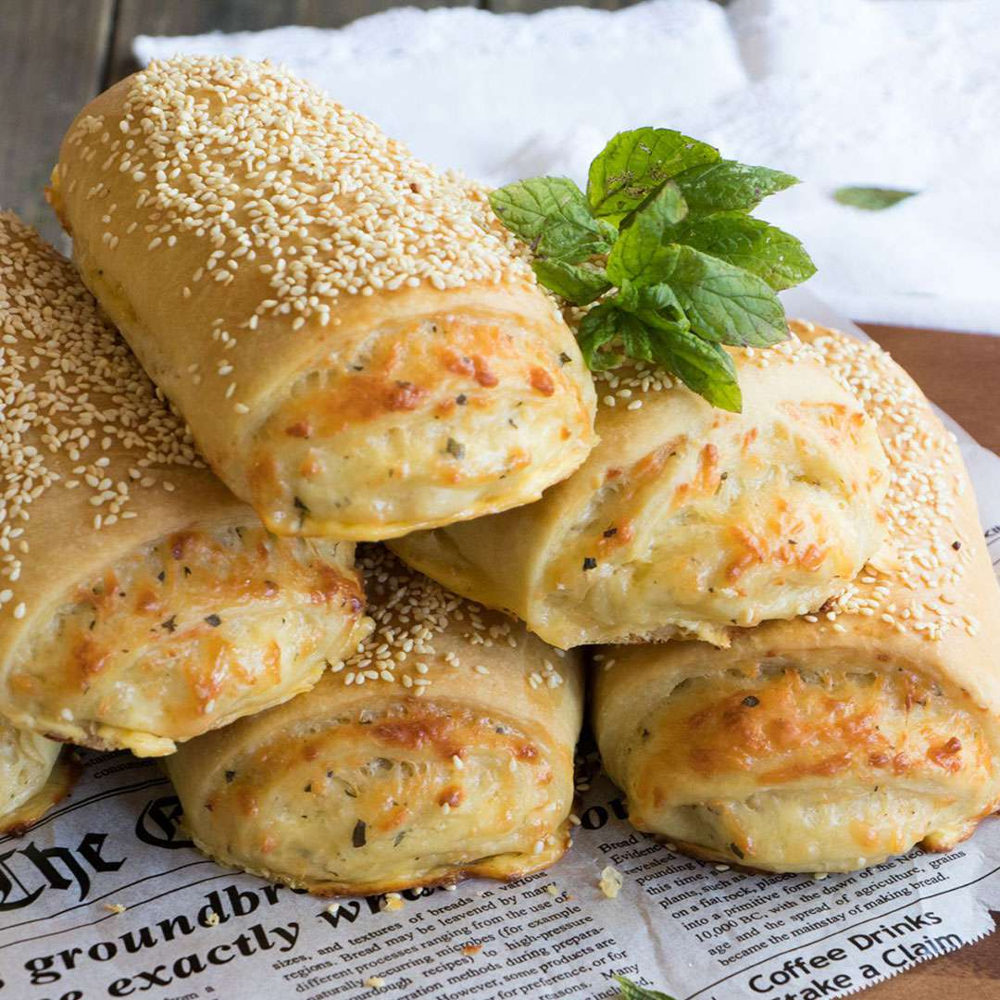
-
Κολοκάσι (σαν πατάτα είναι)
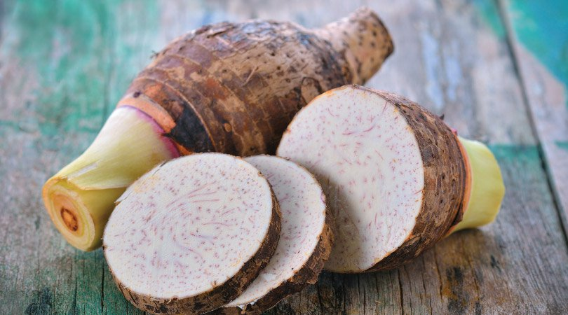
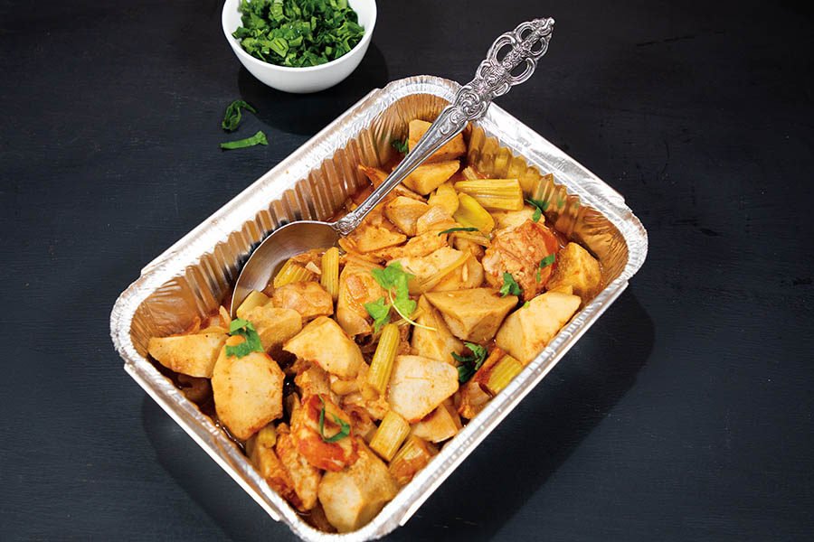
-
Πατάτες αντιναχτές 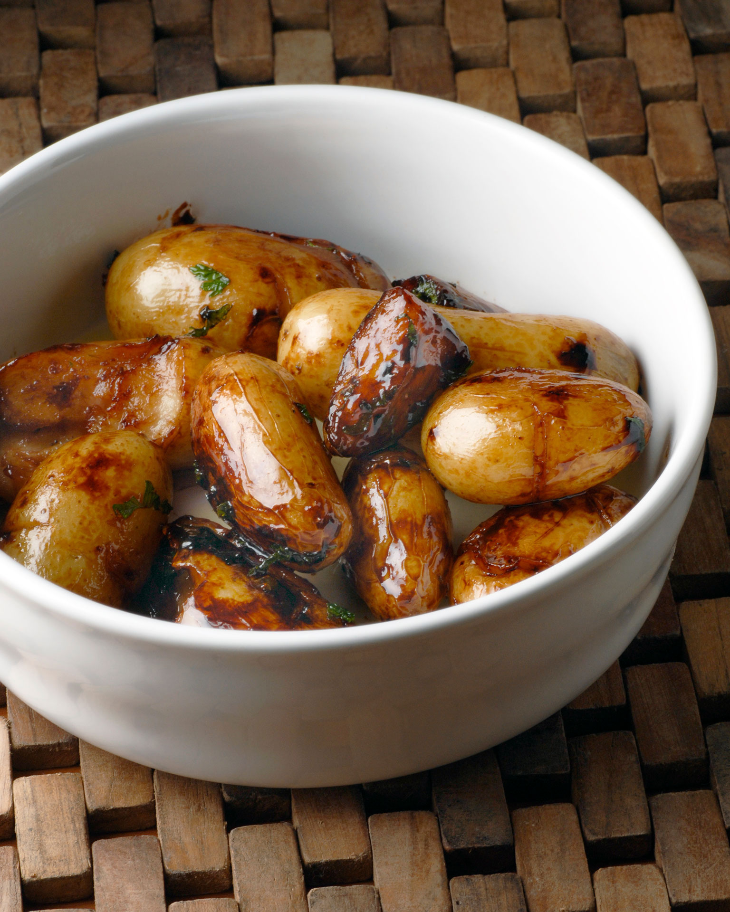
-
Κούπες (από πληγούρι και χοιρινό)
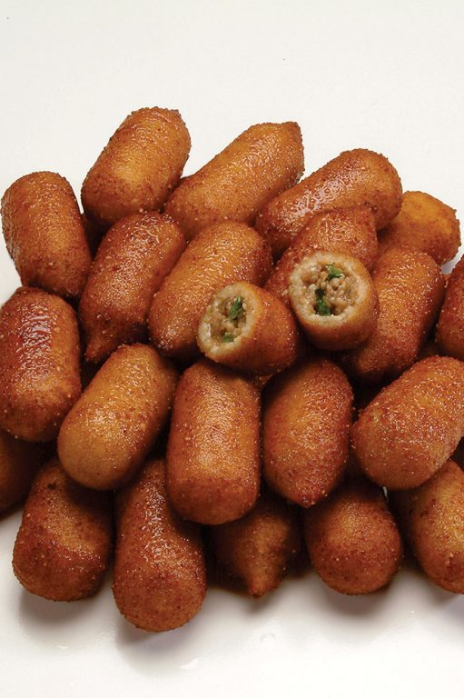
-
Αφέλια (χοιρινό κρασάτο με κόλιαδρο)
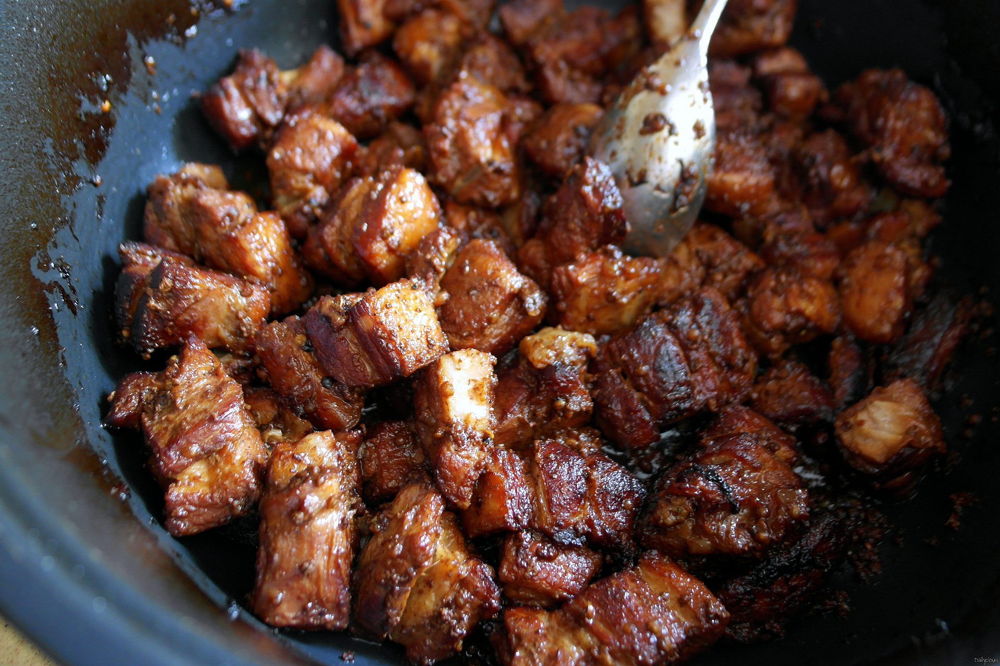
-
Κουπέπια (ντολμαδάκια με κιμά)
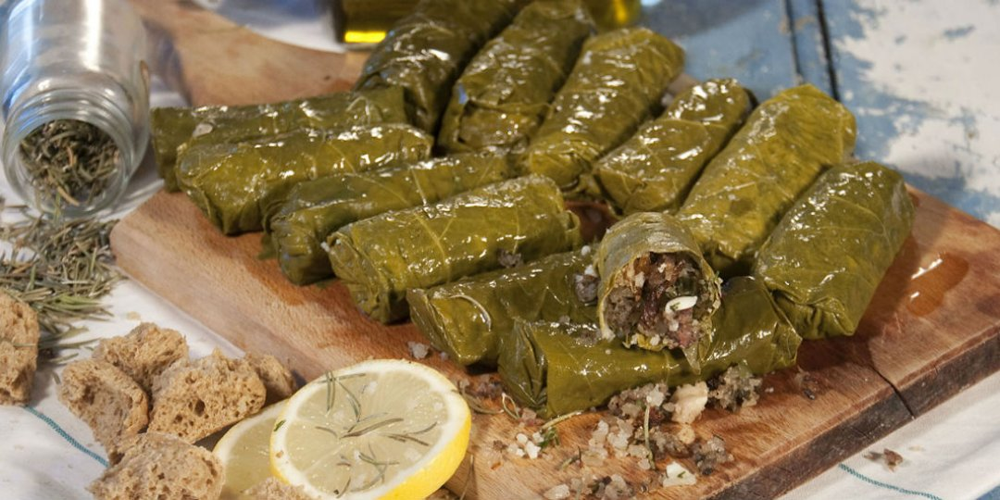
-
Σεφταλιές (χοιρινά μπιφτέκια τυλιγμένα σε μπόλι)
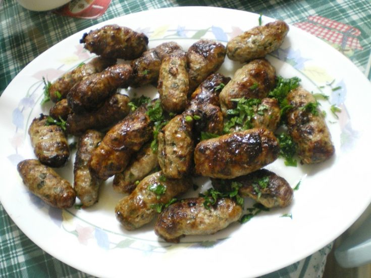
-
Ραβιόλες (ραβιόλια με χαλούμι)
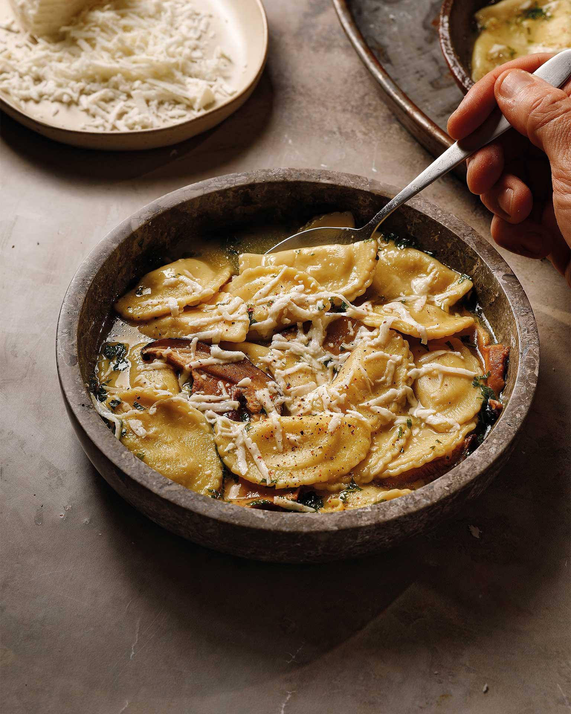
-
Δάχτυλα (σιροπιαστά με αμύγδαλο και κανέλλα)
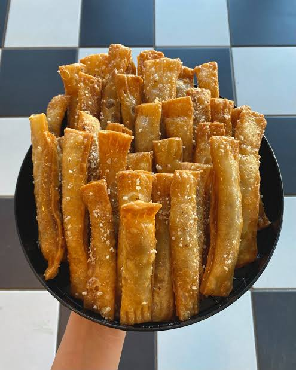
-
Κατιμέρια (basically τηγανήτες)
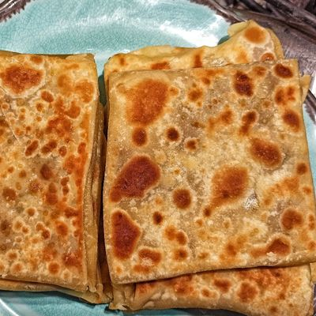
-
Κιουνέφια (basically κιουνεφέ με χαλούμι)
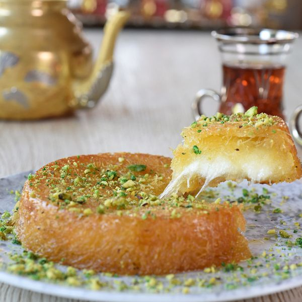
-
Σιουσιούκος (basically σουτζούκ λουκούμ με αμύγδαλο)
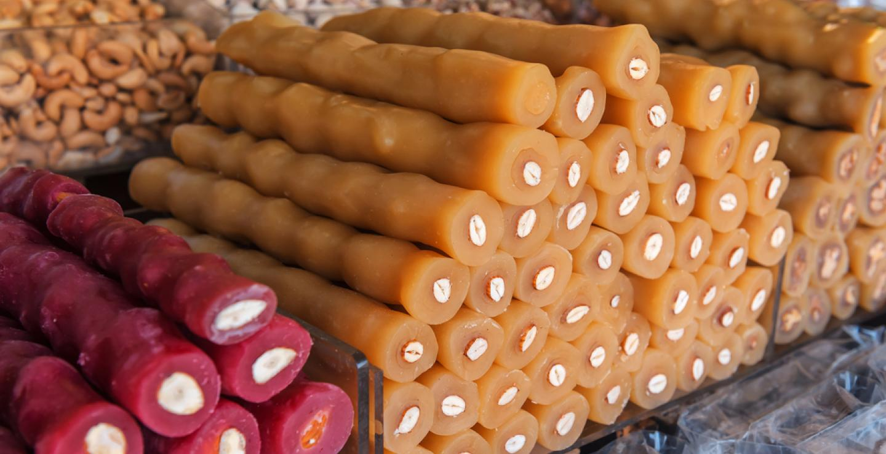
-
Κιοφτέρκα (κάτι με μουσταλευριά)
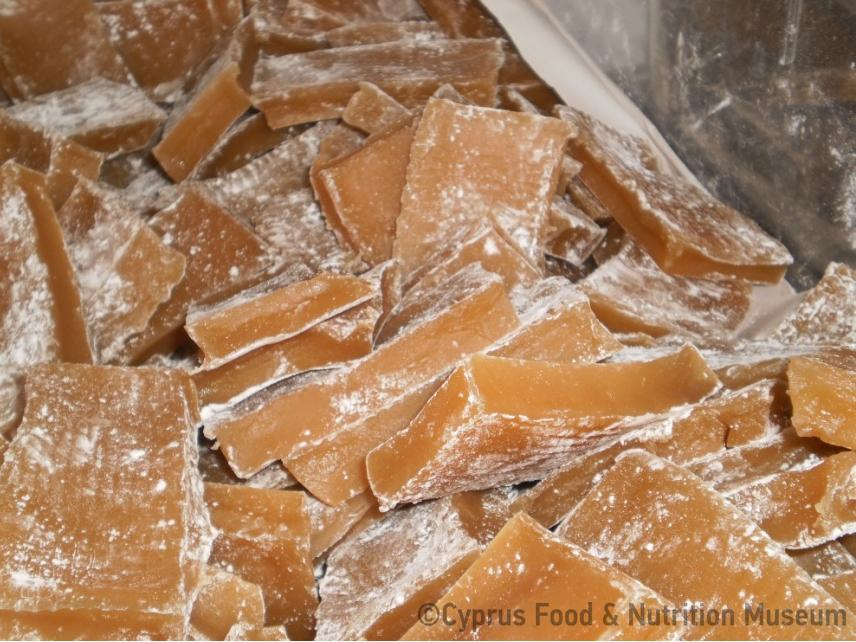